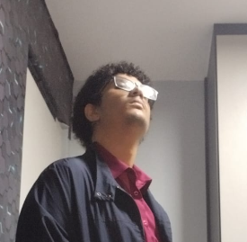
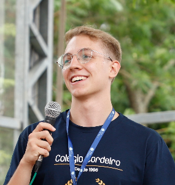

Desenvolvedor
Allyson Victor Santos De Souza
- RM
- 571046
- Curso
- Análise e Desenvolvimento de Sistemas
- Turma
- 1TDSPV
Equipe
Conheça os autores responsáveis pela concepção, prototipação e apresentação do Pulsar.

Desenvolvedor

Desenvolvedor
A equipe trabalhou na organização das telas, construção da identidade visual e demonstração do fluxo de alerta, resposta e acompanhamento.
O Pulsar foi desenvolvido como protótipo para representar uma solução resiliente de comunicação em cenários de emergência.